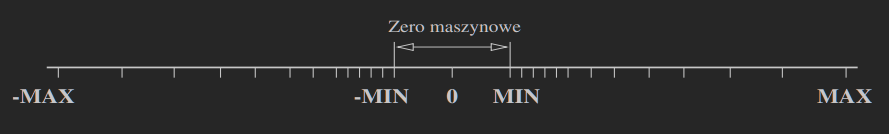

1. Postać znormalizowana
Każdą liczbę rzeczywistą x=0 można zapisać w postaci znormalizowanej: x=±m⋅βc=±(0.a1,a2,…)β⋅βc gdzie:
- β jest bazą
- m∈[β1;1) jest mantysą
- c∈Z jest cechą (rząd wielkości)
- ∀i ai∈{0,1,…,β−1}, a1=0
1.1. Przykłady
β=10
732.5051=0.7325051⋅103
−0.005612=−0.5612⋅10−2
β=2
(1001.11101)2=(0.100111101)2⋅24
(0.0010111)2=(0.10111)2⋅2−2
2. Arytmetyka zmiennopozycyjna (fl)
Bierzemy postać znormalizowaną i narzucamy pewne ograniczenia: rd(x)=±mt⋅βc=±(0,a1,a2,…,at)β⋅βc gdzie:
- t jest stałą liczbą cyfr mantysy
- cecha c∈[cmin;cmax]∩Z
Powyższą arytmetykę nazywany arytmetyką zmiennopozycyjną (fl).
Reprezentacja liczby x w fl:
- rd(x)
- x
3. Zaokrąglenie i obcięcie
- Przedstaw x w postaci x=±mβc, m∈[β1;1)
- zaokrąglij mantysę m do najbliższej liczby t-cyfrowej (w przypadku obcięcia rozwinięcie mantysy obcinamy po t cyfrach), otrzymując rd(m)
- Podstaw rd(x):=±rd(m)βc=±mtβc.
Zakłada się, że zaokrąglenie jest domyślnym sposobem otrzymania przybliżenia rd(x) liczby x.
3.1. Przykład — zaokrąglenie dla baz 2 i 10
rd(m):={0,a1,…,at0,a1,…,at+10−tjesˊli at+1≤4jesˊli 5≤at+1≤9
rd(m):={0,a1,…,at(0,a1,…,at)2+2−tjesˊli at+1=0jesˊli at+1=1
3.2. Błąd względny i precyzja
Weźmy dwie sąsiadujące niezerowe liczby (liczby maszynowe) x−=mt−βc oraz x+=mt+βc przy czym x+=(mt−+β−t)βc.
Wówczas ∣x+−x−∣=β−tβc=βc−t
Oszacujmy więc, błąd względny dla zaokrąglenia: ∣δ∣=∣x∣∣rd(x)−x∣≤21∣x∣∣x+−x−∣=21∣mxβc∣βc−t≤21β−1β−t=21β1−t
gdzie x−, x oraz x+ są sąsiadującymi liczbami.
Dla obcięcia ∣δ∣≤β1−t.
∣δ∣=∣x∣∣rd(x)−x∣ lub inaczej rd(x)=x(1+δ), ∣δ∣≤ϵ, ϵ=0.5⋅β1−t.
Liczbę ϵ nazywamy precyzją arytmetyki.
4. MIN oraz MAX

Z założenia, że mt∈[β1;1) wynika, że w arytmetyce fl możemy reprezentować liczby x spełniające zależność: MIN=β1βcmin≤∣X∣≤(1−β−t)βcmax=MAX
Jeśli ∣x∣>MAX, to mówimy o nadmiarze (mogą być przerwane obliczenia).
Jeśli ∣x∣<MIN, to rd(x)=0 i mówimy o niedomiarze. Błąd tej reprezentacji jest równy 100%.
4.1. Przykład
Rozważmy arytmetykę dwójkową (β=2), w której:
- 1 bit przeznaczono na zapis znaku s liczby x
- 6 bitów przeznaczono na zapis cechy c (wraz z bitem znaku) (c∈[−31,32])
- 16 bitów przeznaczono na zapis mantysy (t=16)
wówczas MIN=212−31≈4.66⋅10−10MAX=(1−2−16)232≈4.29⋅109
5. Przykład reprezentacji liczby
- liczba x=9.13 w arytmetyce fl
- β=2
- t=6
| ϵ=1.56⋅10−2 |
| x=9.13=(1001.0010…)2=normalizacja(0.10010010…)2⋅24⟶zaokrąglenierd(x)=(0.100101)2⋅24. |
| ∣δ∣=∣x∣∣rd(x)−x∣≈1.32⋅10−2. |